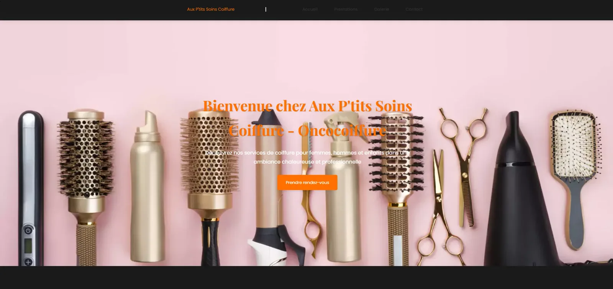
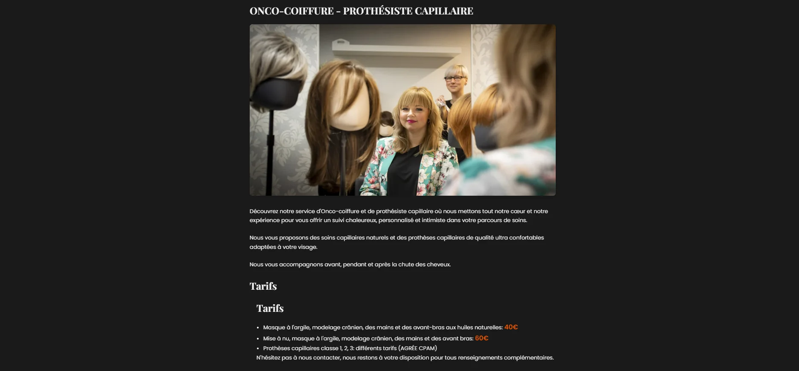
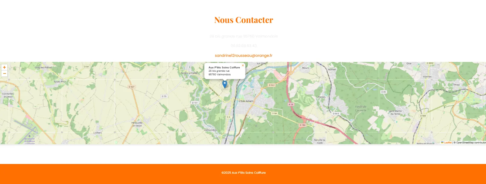

Projet 05 / Site client
Aux P’tits
Soins Coiffure.
Un salon, côté web.
Mon premier projet client : concevoir le site d’une coiffeuse indépendante, le mettre en ligne et en assurer le suivi.

- Mon rôle
- Conception · Développement · Suivi
- Cadre
- Projet client indépendant
- Depuis
- Première mise en ligne en 2024
- Technologies
- HTML · CSS · JavaScript
01 / La demande
Un salon.
Une présence en ligne.
Une coiffeuse indépendante voulait présenter son activité et faciliter la prise de rendez-vous. J’ai conçu et développé son site, puis assuré son suivi après la mise en ligne en 2024.
Le projet comprend la présentation des prestations et des tarifs, une partie consacrée à la coiffure oncologique et les informations pratiques pour contacter le salon.
02 / Le site en images
Pensé pour
les clientes du salon.
Les captures peuvent être agrandies. Le site se consulte aussi directement depuis le lien en haut de page.







03 / Les repères
Le projet, en quelques faits.
2024
Première mise en ligne
01
Cliente · Coiffeuse indépendante
03
Technologies · HTML, CSS, JavaScript
Suivi
Maintenance et évolutions
04 / Le suivi
Le projet continue
après la mise en ligne.
Comprendre la demande
Traduire les besoins de la cliente en pages et en fonctionnalités concrètes, avec des explications accessibles.
Construire le site
Intégrer l’identité du salon, ses prestations et ses informations pratiques en HTML, CSS et JavaScript.
Assurer la suite
Maintenir le site, répondre aux demandes d’évolution et prévenir la cliente avant les changements en production.
05 / Ce que j’en garde
Le code compte.
La relation aussi.
Une demande comme « je veux quelque chose de beau et moderne » oblige à poser des questions précises. Le travail commence là, avant les choix de couleurs et l’intégration.
La maintenance m’a appris à garder un code lisible. Quand il faut reprendre une page plusieurs mois plus tard, on apprécie de retrouver ses repères.
Un premier projet client, avec une responsabilité qui dure.